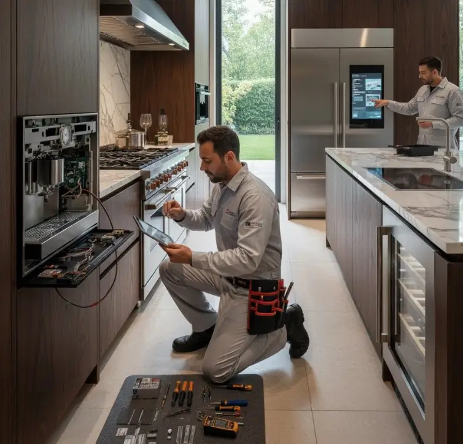

نصائح الخبراء لإصلاح أجهزة المطبخ الفاخرة
دليل عملي للتعامل مع الأعطال البسيطة، ومعرفة الحالات التي تحتاج إلى فني متخصص للحفاظ على أداء أجهزة المطبخ وعمرها الافتراضي.
عندما تستثمر في أجهزة مطبخ فاخرة، فإنك تتوقع أداءً مميزًا يدوم طويلًا. لكن توقف الفرن أو ظهور مشكلة في الثلاجة الذكية قد يحول الراحة إلى مصدر إزعاج. فهم أساسيات التعامل مع الأعطال البسيطة يساعدك على اتخاذ القرار الصحيح، ويجنبك المحاولات العشوائية التي قد تزيد المشكلة.
كيف أفحص ثلاجتي الفاخرة التي لا تبرد؟
قبل طلب فني متخصص، يمكن إجراء بعض الفحوصات الخارجية البسيطة دون فك أجزاء معقدة:
- مصدر الكهرباء: تأكد من أن الثلاجة موصولة جيدًا وأن القاطع الكهربائي لم يفصل.
- الكمبروسر: استمع إلى نمط تشغيله؛ التشغيل المستمر أو عدم التشغيل قد يكون مؤشرًا يحتاج إلى فحص.
- ملفات المكثف: تراكم الغبار خلف أو أسفل الثلاجة قد يقلل كفاءة التبريد، ويمكن تنظيف الأجزاء المسموح بتنظيفها بعد فصل الكهرباء.
- فتحات توزيع الهواء: تأكد من عدم وجود أطعمة أو عبوات تسد مسارات الهواء البارد.
- إعداد الحرارة: راجع إعداد الثرموستات أو لوحة التحكم وتأكد من ضبطها حسب دليل الجهاز.
- تراكم الثلج: التراكم الكثيف في بعض موديلات نوفروست قد يشير إلى مشكلة في نظام إذابة الثلج ويحتاج إلى تشخيص.
أشهر أعطال غسالات الأطباق وكيفية التعامل معها
غسالة الأطباق من الأجهزة المهمة في المطبخ، وبعض المشكلات تبدأ بأعراض بسيطة يمكن فحصها قبل طلب الصيانة.
1. الأطباق تخرج غير نظيفة
قد يكون السبب التحميل الزائد أو ترتيب الأواني بطريقة تمنع وصول الماء. افحص أذرع الرش ونظف فتحاتها من بقايا الطعام والترسبات.
2. تجمع المياه في قاع الغسالة
افحص الفلتر ونظفه من بقايا الطعام والدهون، وتحقق من خرطوم التصريف بحثًا عن التواء أو انسداد.
3. الغسالة لا تعمل
ابدأ بالتأكد من الكهرباء وإغلاق الباب بإحكام. إذا استمرت المشكلة، فقد يكون هناك خلل في مصدر الطاقة أو أحد المكونات الداخلية ويُفضل طلب فحص فني.
خطوات بسيطة لاستكشاف أعطال الأجهزة الذكية
الأجهزة الحديثة قد تعتمد على أنظمة تحكم واتصال ذكية. في بعض الحالات البسيطة، يمكن تجربة فصل الجهاز عن الكهرباء لمدة دقيقة ثم إعادة تشغيله. كما يُنصح بالتحقق من تحديثات التطبيق أو البرنامج الخاص بالجهاز إذا كان متصلًا بالهاتف.
نصائح الخبراء لإصلاح أجهزة المطبخ الفاخرة
- اقرأ دليل المستخدم: تعرف على طرق التشغيل والتنظيف ومتطلبات الصيانة الخاصة بالموديل.
- نظف الجهاز بانتظام: اهتم بالفلاتر وملفات المكثف والأجزاء التي يسمح الدليل بتنظيفها.
- افصل الكهرباء قبل أي فحص: خصوصًا عند تنظيف أو فحص أجزاء خارجية تتطلب التعامل بالقرب من مصدر الطاقة.
- احتفظ بسجل للصيانة: تسجيل الأعطال والإصلاحات يساعد في ملاحظة المشكلات المتكررة.
فحص عنصر التسخين في الفرن الكهربائي
إذا كان الفرن لا يسخن أو يستغرق وقتًا أطول من المعتاد، فقد تكون هناك مشكلة في عنصر التسخين. ابدأ بفصل الكهرباء تمامًا، ثم يمكن إجراء فحص بصري دون لمس المكونات المكهربة.
- افصل الفرن عن مصدر الكهرباء.
- افحص عنصر التسخين بصريًا بحثًا عن تشققات أو انتفاخات أو علامات احتراق.
- إذا احتاج الأمر إلى اختبار كهربائي باستخدام الملتميتر أو فك مكونات داخلية، الأفضل ترك ذلك لفني متخصص.
نصائح لإطالة العمر الافتراضي لأجهزتك
- الصيانة الوقائية: لا تنتظر ظهور عطل كبير حتى تفحص الجهاز.
- التنظيف الدوري: تراكم الأتربة والدهون قد يؤثر على الكفاءة.
- تنظيف الفلاتر: خصوصًا في غسالات الأطباق والأجهزة التي تحتوي على فلاتر قابلة للتنظيف.
- الالتزام بدليل الجهاز: استخدم البرامج والمنظفات وطرق التنظيف الموصى بها.
- تجنب التحميل الزائد: استخدم الأجهزة ضمن السعة المحددة لها.
- عالج الأعراض المبكرة: الأصوات الغريبة والتسريبات وتغير الأداء تستحق الانتباه.
متى يكون استبدال الجهاز أفضل من إصلاحه؟
القرار يعتمد على تكلفة الإصلاح، عمر الجهاز، تكرار الأعطال، وتوفر قطع الغيار. إذا أصبحت تكلفة الإصلاح مرتفعة جدًا مقارنة بقيمة جهاز بديل، أو تكررت الأعطال بشكل متقارب، فقد يكون الاستبدال أكثر منطقية. لكن الأفضل اتخاذ القرار بعد تشخيص واضح وتقدير للتكلفة.
جهاز المطبخ وقف ومش عارف تبدأ منين؟
تواصل مع التوكيل للصيانة للاستفسار عن المشكلة وطلب الخدمة المناسبة. متاح طلب زيارة فني إلى المنزل، أو زيارة مقر الشركة عند الحاجة.
أسئلة شائعة
ما سبب ظهور رائحة احتراق خفيفة من جهاز جديد؟
قد تظهر رائحة خفيفة في بعض الأجهزة الجديدة أثناء الاستخدامات الأولى، لكن إذا كانت الرائحة قوية أو مصحوبة بدخان أو سخونة غير طبيعية، يجب إيقاف الجهاز وفصل الكهرباء وطلب الفحص.
هل يمكن استخدام أي منظف على الأسطح المصنوعة من الستانلس ستيل؟
لا يُفضل استخدام المنظفات الكاشطة أو المواد التي قد تضر السطح. استخدم منتجًا مناسبًا للستانلس ستيل واتبع تعليمات الشركة المصنعة.
الجهاز يصدر صوتًا غير معتاد، هل هذا خطر؟
بعض الأصوات طبيعية أثناء التشغيل، لكن الصوت الجديد أو العالي أو المصحوب باهتزاز أو رائحة غير طبيعية يستحق الفحص وإيقاف الجهاز إذا ظهرت علامة خطر.
هل تحديث برامج الأجهزة الذكية مهم؟
إذا كان الجهاز يدعم تحديثات البرامج أو التطبيق، فقد تساعد التحديثات في تحسين الأداء وإصلاح بعض المشكلات التشغيلية، وفق ما توضحه الشركة المصنعة.
هل استخدام مشترك كهربائي مع الأجهزة الكبيرة مناسب؟
الأجهزة ذات الاستهلاك المرتفع تحتاج إلى توصيل كهربائي مناسب للمواصفات. تجنب استخدام وصلات أو مشترك غير مناسب للحمل الكهربائي، واستعن بكهربائي مختص إذا كان هناك شك في أمان التوصيل.
مقالات مرتبطة
هل تواجه مشكلة أو عطلاً في جهازك؟
تواصل مع فريق "التوكيل للصيانة" الآن للحصول على استشارة فنية وفحص منزلي فوري بأعلى معايير الدقة والأمان.